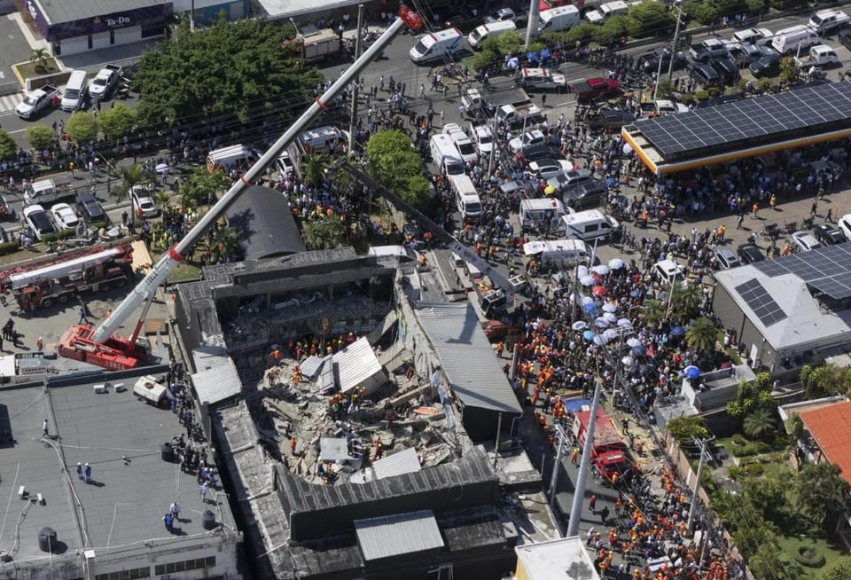

世界苦茶04月09日新闻 | 42条 | 李强与冯德莱恩通话讨论关税事宜

李强与冯德莱恩通话讨论关税事宜 | 河北一养老院火灾至少20人死亡 | 万斯说“中国乡巴佬”引发争议 | 美与日韩讨论关税事宜 | 乌克兰俘虏中国公民
苦茶数据
美元兑人民币：7.38（昨日7.34，前日7.31）
美元兑日元：145.64（昨日147.51，前日145.29）
上证指数：3145（昨日3113，前日3108）
标普500指数：4982（昨日5062，前日5074）
比特币：75606（昨日80566，前日74933）
布伦特原油：60.87（昨日64.74，前日63.27）
中国新闻
• 河北省承德市隆化县一养老院4月8日21时许发生火灾，造成至少20人死亡。火灾原因正在调查中。
• 李强和冯德莱恩4月8日通电话： 冯德莱恩强调，中欧面对关税之乱都有责任支持自由公平公正的全球贸易体系改革，应谈判解决问题，避免进一步升级局势。双方讨论建立机制，以关注关税导致的贸易转移并跟进解决。欧方重申应为平衡中欧贸易提出结构性解方，并改善欧洲企业、商品、服务在华的准入情况。李强表示，中欧应加强沟通协调，扩大相互开放，维护自由开放的贸易投资。中国今年的宏观政策充分考虑了各种不确定因素，也有充足的储备政策工具，完全能够对冲外部不利影响，对保持自身经济持续健康发展充满信心。冯德莱恩重申，欧洲坚定支持乌克兰持久公正和平，和平条件须有乌克兰决定，希望中方为和平进程作出更多有意义贡献。
• 江西毛奇受贿获刑10年半 ：江西新余市万年县委原书记毛奇受贿案宣判，毛奇被判处有期徒刑10年六个月。据央视新闻报道，新余市中级人民法院星期二一审公开宣判毛奇受贿案。被告人毛奇犯受贿罪，判处有期徒刑10年六个月，并处罚金100万元人民币，对其犯罪所得财物予以追缴，上缴国库。经审理查明，2012年至2024年，毛奇利用担任上饶市委人才工作领导小组办公室主任，万年县委副书记、县长，万年县委书记等职务上的便利，以及职权、地位形成的便利条件，通过其他国家工作人员职务上的行为，为他人在工程承揽、资金拨付、职务晋升、银行贷款等事项上提供帮助，直接或通过他人非法收受有关单位和个人给予的财物共计折合人民币1150万余元。 （翻評：这就是之前被下属实名举报性侵的那个，举报者被收监，其父亲继续举报。）
• 中纪委审结中组部驻部纪检组长李刚： 认定他搞投机钻营，结交政治骗子，对抗组织审查；违规从事营利活动；为他人在企业经营、项目承揽、职务调整等方面谋利受贿。决定开除他党籍公职，移送检方起诉。习近平3月19至20日考察云南 ，称“看一个地方党的领导和党建水平高不高，一个重要方面就是看政治生态好不好”，要“让歪风邪气没有市场”。二十届中央第五轮巡视4月8日开动员会，对云南省昆明市开展提级巡视。这是继河北省唐山市后第二座被提级巡视的副省级城市。 （翻评：这应该是军队反腐的一个信号。）
• 香港四泛民初选案刑期公布 ：香港四名泛民主派人士范国威、毛孟静、谭文豪和郭家麒涉2020年立法会初选案，因串谋颠覆国家政权罪成，各被判监禁四年两个月。香港媒体报道，这四人将于本月底出狱。这是香港至今涉及国安法的最大规模案件，也是首次以串谋颠覆国家政权罪起诉的案件。综合香港《东方日报》和网媒“香港01”星期一报道，消息人士称，范国威、毛孟静、郭家麒和谭文豪自2021年已被扣押，根据《基本法》23条下不获惩教署减刑三分之一条例，这四人最早可在4月29日出狱。
• 中方批美副总统言论无礼 ：美国副总统万斯接受媒体访问时使用“中国乡巴佬”字眼。中国外交部回应称，对这位副总统说出这样无知又缺乏礼貌的话，令人诧异，也感到悲哀。万斯在当地时间4月4日接受福克斯新闻访问时，谈及美国对华贸易政策时说，全球化的经济让美国背负巨额债务，来购买其他国家制造的东西。他紧接着说：“直接点说就是‘我们向中国乡巴佬（Chinese peasants）借钱，来购买中国乡巴佬制造的东西’”。
• 胡锡进表示，中美谈判大门已堵死 ：中国官媒《环球时报》前总编辑胡锡进在社交平台发文称，美国总统特朗普最新的关税威胁堵死了解决中美贸易纠纷的谈判大门。胡锡进星期二在个人微博写道，特朗普用最新威胁把中美谈判解决贸易纠纷的大门基本堵死了。中美之间全球最大之一的双边贸易将迅速萎缩，几近中断，这就是特朗普威胁的实质。中国被迫必须奉陪到底。胡锡进称，世界第一和第二大经济体断然脱钩的过程和尽头肯定不仅仅是经济的事情。它将伴随相互敌意的迅速发酵，形成地缘政治的严重不确定性，双方的互动方式会不断遭到华盛顿的毒化。
• 中方表示，美未体现对话诚意 ：针对美中是否会就贸易问题进行会谈或谈判，中国外交部回应，美国所作所为未体现认真对话意愿，若真想谈，应该拿出平等、尊重、互惠的态度。中国外交部发言人林剑星期二在例行记者会上说，美方的所作所为没有体现出想要认真对话的意愿。美方如果真的想谈，就应该拿出平等、尊重、互惠的态度。如果美方置两国和国际社会的利益于不顾，执意打关税战、贸易战，中方必将奉陪到底。同时，对于特朗普扬言北京若不取消反制关税措施，将再叠加征收50%关税，林剑表示，美方滥施关税严重侵犯各国的正当权益、严重违反世界贸易组织规则、严重损害以规则为基础的多边贸易体制、严重冲击全球的经济秩序稳定，是典型的单边主义、保护主义、经济霸凌，遭到国际社会普遍反对。中方对此强烈谴责，坚决反对。
• 两名中国人在韩偷拍战机被捕 ：两名中国人在水原空军基地擅自拍摄战斗机，被韩国警方抓获并立案。据韩联社报道，韩国京畿南部警察厅安全侦查科星期一称，以违反《军事基地及军事设施保护法》嫌疑将两名中国人立案。两人涉嫌3月21日下午3时30分许，在水原空军基地附近利用手机和数码单反相机擅自拍摄正在起飞和降落的战斗机。
• 京沪高铁试点宠物托运 ：中国京沪高铁部分车次将试点宠物托运。据中国央视新闻报道，记者从中铁快运股份有限公司获悉，星期二起，铁路部门将在京沪高铁部分车次试点“隔离运输、人宠分开、专人看护”的高铁宠物托运服务。铁路12306同步推出“宠物托运”功能，旅客提前两天及以上线上预约，预约成功后可同车托运一只家庭驯养且健康状况良好、单只体重不超过15公斤、肩高不超过40厘米的猫、犬类宠物。
• 中国驳瑞典涉华抹黑报告 ：中国驻瑞典大使馆星期二驳斥了瑞典中国国家知识中心近日发布的报告，称报告在涉台、涉疆、涉藏、人权等问题上歪曲事实真相，表示强烈不满和坚决反对。中国驻瑞典大使馆发言人星期二发谈话，称瑞典中国国家知识中心近日发布的《中国简介——为瑞典行动者提供的中国知识支持》在多个问题上歪曲事实真相，对中国进行攻击抹黑，严重误导公众认知，严重损害中国形象。发言人称，希望包括瑞典中国国家知识中心在内的瑞典智库及各界人士切实尊重中国主权和领土完整，客观理性看待中国和中国的发展，多做有利于促进中瑞关系健康稳定发展和两国人民共同福祉的事情。
亚太印太新闻
• 特朗普与韩国代总统通话 ：韩国代总统韩悳洙与美国总统特朗普通电话，特朗普说，他在与韩悳洙的“重大”通话中讨论了关税、造船和潜在的能源交易。特朗普星期二在社交媒体发的帖子中说：“我们掌握了两国达成重大协议的条件和可能性。他们的高层团队正在飞往美国的飞机上，情况看起来不错。”他说，他们还讨论了支付美国军事保护费用的问题。这是特朗普自1月上任以来首次与韩国代总统通话，特朗普在去年11月大选获胜后的第二天曾与现已停职的韩国总统尹锡悦通电话。
• 美军将在冲绳部署侦察无人机 ：美国军方将在日本冲绳地区部署“海神”大型远程侦察无人机，日本防卫部长中谷元说，这将增强日美防务联盟的情报收集能力。中谷元星期二说，未来几周，几架“海神”无人机将抵达冲绳主岛上的美国嘉手纳空军基地，“以加强日本周边的情报收集、监视和侦察活动”。法新社引述中谷元说：“我国周围的安全环境日益严峻。”
• 朝鲜士兵越界韩军鸣枪警告 ：韩国军方说，约十名朝鲜士兵越过军事分界线，韩国军方开枪警告后，他们返回朝鲜境内。法新社引述韩国联合参谋本部星期二的声明说：“我们的军队进行了警告广播并开枪警告，朝鲜士兵向北移动。”声明补充道，事故发生在下午5时左右，地点在东部战线非军事区。参谋本部说，军方正在严密监视朝军动向，并根据遂行作战程序，采取必要措施。韩国联合通讯社报道，去年6月，在中部战线非军事区作业的部分朝鲜军人曾一度越界南下，在韩军广播和鸣枪示警后退回。
• 联合国发布数据，朝鲜儿童死亡率上升 ：根据联合国发布数据，2023年朝鲜五岁以下儿童死亡率为18‰，每1000名五岁以下儿童就有18名死亡。韩联社报道，联合国儿童死亡率估算机构间小组星期二发布数据推测，2023年朝鲜五岁以下儿童死亡率较四年前增加0.3人。同期，韩国五岁以下儿童的死亡率为2.76‰。
科技新闻
• 台湾指大陆用AI进行认知作战 ：台湾国安部门称，中国大陆正利用生成式人工智能增加针对台湾的虚假信息传播，进行认知作战。综合路透社和台湾《联合报》星期二报道，台湾国安局最新送抵立法院的“国家情报工作暨国家安全局业务报告”显示，今年迄今搜获中国大陆散布争议信息51万余则。报告称，中国大陆将内容锁定在“台积电赴美投资”等议题，运用官媒、自媒体、网军集团及公关公司，搭配异常帐号带风向、网骇伪冒发文及操作代理人帐号等手段对台湾进行认知作战，意图制造台湾社会对立。
财经新闻
• 印度称关税危机是机遇 ：虽然美国总统特朗普的对等关税在世界各地引发了恐惧和愤怒，但有一个主要经济体认为这是一个“千载难逢的机遇”。印度商务部长皮尤什·高耶尔星期一说，全球贸易即将发生的变化不仅会给供应链带来公平，也有利于这个世界上增长最快的大型经济体——印度。“我们正处于一个历史时刻，印度完全有能力将当前的形势转化为机遇。”高耶尔在孟买举行的印度全球论坛上说道，“我们有一个千载难逢的机会”。 （翻评：印度当然这么说了，这个事情对印度太有利了。）
• 印度在争取特斯拉投资同时对比亚迪说“不”： 印度正吸引美国电动汽车公司特斯拉的投资同时，仍在限制比亚迪的市场准入。印度商务部长皮尤什·戈亚尔周一在孟买举行的印度全球论坛上接受彭博电视采访时说：“印度必须谨慎对待我们的战略利益，慎重选择允许哪些投资者进行投资。目前我们对于比亚迪投资的态度是‘不能’。去年，新德里拒绝了比亚迪与当地合作伙伴投资10亿美元建厂的提议。而另一家中国汽车制造商长城汽车股份有限公司也因未能获得监管部门批准退出了印度。长期以来，印度一直通过高关税来保护本国汽车制造商，对整车征收 100% 的进口关税，在主要经济体中是最高的。
• 美国与70国开始关税谈判 日本获优先待遇： 美国财政部长斯科特·贝森特表示，他希望随着与美国贸易伙伴的谈判开始，关税税率会下降，一切都会摆到桌面上。斯科特·贝森特周一表示，“对于不报复的国家，我们的关税水平是最高的，我希望通过良好的谈判，我们能看到关税水平下降，但这将取决于其他国家。”斯科特·贝森特表示，现在可能有近七十个国家与美国接洽，“所以4月、5月甚至6月会很忙。”日本很可能在贸易谈判中被优先考虑。“只是因为他们很快就站出来了。”当被问及美国能否在未来两周内达成协议时，斯科特·贝森特没有给出时间表。
• 特朗普指示对日铁收购美国钢铁重新审查： 美国总统特朗普4月7日指示美国外国投资委员会 对日本制铁收购美国钢铁的交易进行重新审查。特朗普签署了一份跟总统令具有相同效力的备忘录。这有可能会推动之前停滞的谈判取得进展。根据备忘录，关于国家安全保障方面的风险，审查“将秘密严格且真实”地进行。外国投资委员会将在45天内向总统报告日铁提出的降低风险的方案是否充分。日铁的收购计划在前拜登政府发布中止命令后陷入困境。日铁并未改变将美国钢铁纳为全资子公司的方针。日铁与美国钢铁对拜登等人提起的诉讼的口头辩论已从原定的4月24日推迟到5月12日的一周。
• 台北市推中小企资金援助 ：美国总统特朗普宣布最新关税措施后，台湾台北市长蒋万安公布，台北市官方会为有资金需求的中小企业提供协助，并承诺在门槛方面，不会让中小企业看得到、吃不到。蒋万安星期二在脸书上说，台北市政府产业发展局要持续改善中小企业体质，提供企业资金协助方案。他说：“产业局持续提供中小企业数位转型、净零碳排之转型辅导措施，并针对有资金需求之中小企业，提供贷款融资或补贴及延长贷款还款期限等资金协助措施。我也特别提醒，关于门槛方面，一定不能让中小企业‘看得到、吃不到’。” （翻评：中国似乎现在还没有提供外贸企业补助。）
• 冯德莱恩吁中美协商关税 ：欧盟委员会主席冯德莱恩星期二呼吁中国对美国特朗普政府实施的广泛关税问题，采取协商解决方案。据路透社报道，冯德莱恩与中国国务院总理李强通电话。冯德莱恩在通话中表示，作为全球两个最大市场之一，欧洲和中国有责任支持一个建立在公平竞争基础上的强大改革贸易体系，确保这一体系自由、公平。冯德莱恩办公室表示，两位领导人讨论了建立一个机制，以跟踪由关税引发的潜在贸易转移。欧盟担心中国会将从美国转移的廉价出口商品重新导向欧洲。 （翻评：我说欧洲会调停吧。）
• 希音被劝勿转移供应链 ：快时尚巨头希音将供应链向中国境外转移的计划据悉遭到中国官方的反对。据彭博社星期二报道，一位知情人士称，中国商务部与希音等公司就供应链多元化问题进行了沟通，劝告这些企业不要转向其他国家的供应商进行采购。上述人士称，中方在特朗普宣布“对等关税”前数天，就表达了以上要求，因为美国的关税威胁促使希音等公司寻求供应链多元化以规避更高关税。
• 中方准备六招反制美关税 ：中国媒体报道，针对美国政府称北京若不取消对美输华商品的反制关税措施，就再叠加征收50%关税，中国已准备了六招反制措施。有中国官媒新华社背景的自媒体微信公众号“牛弹琴”星期二发文说，美国政府美东时间星期一威胁进一步对华加征50%关税。中国商务部发言人星期二上午明确表态，“如果美方升级关税措施落地，中方将坚决采取反制措施维护自身权益”。大幅加征美国大豆、高粱等农产品关税；限制美国的禽类产品输华；暂停中国与美国的芬太尼合作；在服务贸易领域，对美国采取反制措施；减少或禁止美国电影输出中国；调查美国企业在华的知识产权（IP）获益情况。
• 台积电可能因其芯片被交付给华为面临超 10 亿美元罚款： 据两位知情人士透露，台积电可能面临10亿美元或以上的罚款，以和解美国出口管制调查，调查内容是该公司生产的一款芯片最终进入华为人工智能处理器。美国商务部一直在调查这家全球最大的芯片代工商为中国算能科技所做的工作，台积电为这家设计公司制造的芯片与华为高端昇腾 910B 人工智能处理器中发现的芯片相匹配。台积电近年来已经生产了近 300 万颗符合算能科技订购设计的芯片，这些芯片最终很可能都流向了华为。这项可能超过10亿美元的罚款来自出口管制条例，条例规定对违反规定的交易处以最高两倍的罚款。新任部长卢特尼克领导的美国商务部誓言对违反出口管制条例的行为加大执法力度。
• 台湾称随时可与美磋商关税 ：台湾外交部长林佳龙受访时说，台湾随时能与美国就关税问题开展磋商。综合台湾《联合报》、中时新闻网和路透社报道，美国总统特朗普上星期三宣布对全球贸易伙伴祭出对等关税后，部分国家陆续与美国接洽期望展开谈判，以降低关税。美国国家经济委员会主任哈塞特说，特朗普整个周末都在与世界各国领导人交谈，也证实台湾已在上星期六深夜联系美方。
• 马斯克加大对白宫高级顾问纳瓦罗的抨击： 随着特斯拉股价连续第四天下跌，首席执行官埃隆·马斯克对美国总统特朗普的首席贸易顾问彼得·纳瓦罗进行了猛烈抨击。世界首富马斯克上周末开始抨击纳瓦罗，他在 X 上发帖称“哈佛经济学博士学位是件坏事，不是好事”，这是指纳瓦罗的学位。周二，马斯克写道：“纳瓦罗真是个白痴”，并指出他关于特斯拉是“汽车组装商”的言论“显然是错误的”。马斯克称纳瓦罗“比一袋砖头还笨”，后来还向砖头道歉。马斯克还称纳瓦罗“愚蠢至极”。马斯克对纳瓦罗的抨击是自一月特朗普总统上任以来，特朗普核心圈子成员之间最公开的争吵，也表明上周宣布的对 180多个国家和地区征收关税并未得到政府的普遍认可。
• 人民币跌至近年新低 ：中国央行略微放松了对人民币的管控，人民币星期二跌至自2023年以来的最弱水平。分析人士表示，此举旨在抵消全球贸易战加剧对出口的冲击。中国人民银行星期二将人民币中间价设定在7.2038，为去年9月以来的最弱水平。这是自特朗普去年11月当选美国总统以来，首次中间价跌破7.2，这一水平被投资者视为官方对管理货币态度的“软红线”。疲软的中间价使在岸人民币在早盘交易中跌至7.34，为2023年9月11日以来的最低水平。星期二离岸人民币一度跌破7.36。
• 多家国有基金增持稳定A股 ：中国A股大跌后，多家国有基金宣布增持稳定市场。大型央企中国国新控股有限责任公司星期一晚间公告，增持中央企业股票、科技创新类股票及ETF。中国国新控股表示，坚定看好中国资本市场发展前景，坚决当好长期资本、耐心资本、战略资本，旗下国新投资有限公司增持中央企业股票、科技创新类股票及ETF等，首批金额为800亿元人民币，积极支持关键领域科技创新，为维护市场稳定运行贡献力量。中国国新是中国国资委直接监管的中央企业。
• 宁德时代等宣布大额回购 ：中国电科、宁德时代，以及中国招商系多家上市公司密集宣布回购计划，巩固市场对上市公司信心，金额已超过100亿元人民币。中国电科微信公众号星期二凌晨发文称，中国电科基于对中国经济长期向好的坚定信心，积极履行对资本市场承诺，已完成增持回购旗下上市公司股票超过20亿元。宁德时代星期一晚公告，公司拟使用不低于40亿元且不超过80亿元自有或自筹资金，以集中竞价交易方式回购部分股份，用于股权激励计划或员工持股计划
• 白宫确认4月9日起对华加税 ：白宫4月8日确认，由于中国未在当天中午前撤回34%的反制关税，美国将于美东时间4月9日起对华征收104%的关税。
俄乌战争
• 泽连斯基称俘获中国公民 ：乌克兰总统泽连斯基说，乌克兰军队抓获了两名与俄罗斯军队并肩作战的中国公民，并说基辅将要求北京作出解释，并要求盟友作出反应。法新社引述泽连斯基星期二在社交媒体上发的一篇帖子说：“我们的军队抓获了两名在俄罗斯军队中作战的中国公民。这件事发生在乌克兰领土——顿涅茨克地区。我们有这些俘虏的文件、银行卡和个人数据。”帖子中还附上了其中一名据称是中国俘虏的照片。此外，泽连斯基7日晚说，乌克兰军队已经进入俄罗斯别尔哥罗德州开展军事行动。
• 乌军首次确认挺进俄别尔哥罗德 ：乌克兰总统泽连斯基星期一表示，乌克兰军队已进入俄罗斯别尔哥罗德州开展军事行动。法新社报道，这是俄罗斯入侵乌克兰三年多以来，泽连斯基首次明确证实乌军在俄罗斯别尔哥罗德州的存在。莫斯科日前称，该地区3月曾遭袭击。自乌军于去年突袭俄罗斯库尔斯克州以来，靠近库尔斯克州的别尔哥罗德州持续遭乌军空袭。
其他新闻
• 美防长称国防预算破万亿美元 ：美国国防部长赫格塞思说，美国国防预算将首次达到1万亿美元。赫格塞思星期一在社交媒体上写道：“即将到来：第一个万亿美元国防部预算。”新华社引述赫格塞思说，特朗普政府“正在重建美国军队——而且是快速重建”。他还称，将“明智地”使用每一块钱，用于提升“杀伤力和战备能力”。 （翻评：这不是要...削减开支？）
• 北极海冰3月面积创新低 ：欧洲联盟气候监测机构哥白尼气候变化服务局发布报告说，北极海冰覆盖范围在今年3月降至有记录以来同期最低水平，3月也是有记录以来全球气温第二高的3月。星期二发布的报告显示，今年3月的北极海冰覆盖面积跌至有卫星记录的47年以来同期最低水平，比历史上3月平均水平低6%；同时，由于北极海冰面积在3月达到年度最大值，刚刚过去的3月，北极海冰覆盖面积也是有记录以来最低的年度最大值。南极海冰覆盖范围则在3月创下有记录以来的同期第四低，比3月平均水平低24%。新华社引述这份报告说，今年3月是有记录以来全球气温第二高的3月。当月，全球平均地表气温为14.06摄氏度，比工业化前（1850年至1900年）平均值高出1.60摄氏度，是过去21个月中第20个全球平均地表气温比工业化前水平高出1.5摄氏度以上的月份。
• 英国将投6亿建健康数据中心 ：英国政府将与惠康基金会一起投资6亿英镑，建立一项新的健康数据研究服务。新华社报道，英国政府星期一发布公报说，上述措施当天由英国首相斯塔默宣布，旨在加速药物研发，改善患者护理，推动英国的医学研究。公报说，建立新的健康数据研究服务将把英国医学研究数据集中到安全且便于使用的单一访问点，以改善在英国国民保健制度下的健康数据访问。这意味着，研究人员不必浏览不同系统，或为同一项目的信息多次申请，从而减少研究过程中的繁琐步骤。
• 美军高官查特菲尔德被撤职 ：三名消息人士说，在北约担任高级职务的一名美军中将已被解除职务，这似乎是特朗普政府扩大美国国家安全高层“清洗行动”的一部分。消息人士星期一向路透社披露，美国盟友已收到美国海军中将查特菲尔德被解除职务的通知。五角大楼没有立即证实这一消息。查特菲尔德是美国驻北约军事委员会的军事代表，也是美国为数不多的女性海军三星军官。曾领导美国海军战争学院，是首位承担这一职责的女性。
• 联合国对美暂停粮援表关切 ：联合国世界粮食计划署对美国政府终止对14个国家紧急粮食援助的最新通知，表示严重关切。新华社报道，世界粮食计划署星期一晚在社交媒体上发表声明说，如果相关决定得以执行，数百万身处极度饥饿和濒临饥荒的人将面临生命威胁。“这可能相当于对这些人判死刑。”声明说，世粮署就此事与美国保持沟通，并呼吁美方继续支持这些关乎民众生死的援助项目。
• 巴拿马将起诉长和续约官员 ：巴拿马审计署发现授予香港长江和记集团运营港口特许权存在违规行为，将起诉与长和续约的官员。综合路透社和法新社报道，巴拿马审计署星期一发布的审计结果显示，授予长江和记集团旗下巴拿马港口公司的运营港口特许权存在多项违规行为，涉及拖欠12亿美元款项。巴拿马在美国防长赫格塞斯到访前数小时公布上述结果。美国总统特朗普持续向巴拿马施压，要求他们降低中国在巴拿马运河的影响力。
• 美法院裁定白宫封杀美联社违宪 ：美国哥伦比亚特区联邦地区法院法官特雷弗·麦克法登4月8日裁定，白宫阻止美联社进入椭圆形办公室等场所报道新闻的措施违宪，要求白宫允许美联社进入上述场所报道新闻。麦克法登表示，根据宪法第一修正案，如果政府向记者敞开大门，就不能因为一些记者的观点而对这些人关闭大门。但法院没有命令政府像白宫记者协会一样一直允许美联社进入椭圆形办公室等场所，但美联社的待遇不能比同行差。他的裁定也并不要求政府官员选择接受哪些媒体采访或回答哪些记者问题。美联社对裁决感到满意，认为裁决肯定了新闻界和公众在没有政府报复的情况下自由发声的基本权利。白宫及被告官员尚未置评。
• 美国国防部长赫格塞思4月8日访问巴拿马，成为几十年来首位访问该国的美国防长： 赫格塞思表示，巴拿马运河面临来自中国的持续威胁，美国和巴拿马将共同维护运河安全。赫格塞思提及长江和记控制的两个港口，认为这使中国有可能在巴拿马各地进行监视活动。会谈结束后不久，中国驻巴拿马使馆发表声明，抨击美国利用“勒索”来促进自身利益，表示巴拿马与谁开展业务是该国的主权决定，美国无权干涉。巴拿马政府正在对长和对港口的租约进行审计，并在4月7日晚得出结论认为租约存在违规行为，导致巴拿马损失约3亿美元的收入。审计长表示，审计结果将发给负责监督港口并有权终止租约的海事局。
• 加拿大财政部长商鹏飞8日宣布，对美国汽车对等征收25%关税措施将于美国东部时间9日零时1分生效： 加拿大将继续对美国向加方征收的所有不合理关税作出有力回应。加拿大政府坚定致力于尽快取消这些美国关税，以保护加拿大的工人、企业、经济和工业。加拿大还将针对汽车生产商实施减免方案，以激励汽车生产商在加拿大的生产和投资，并帮助维持加拿大的就业岗位。